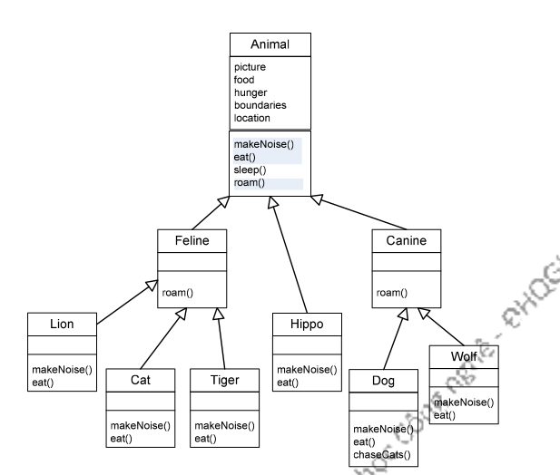
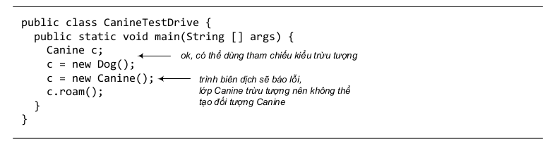

Thừa kế mới chỉ là khởi đầu. Để khai thác cơ chế đa hình, các ngôn ngữ lập trình hướng đối tượng cung cấp các cơ chế kiểu trừu tượng (abstract type). Các kiểu trừu tượng có cài đặt không đầy đủ hoặc không có cài đặt. Nhiệm vụ chính của chúng là giữ vai trò kiểu tổng quát hơn của một số các kiểu khác. Kiểu trừu tượng không hề có cài đặt là các interface (không phải khái niệm giao diện đồ họa người dùng GUI).
Kiểu trừu tượng có cài đặt một phần là các lớp trừu tượng. Chúng mang lại sự linh hoạt và khả năng mở rộng cho thiết kế hướng đối tượng. Ví dụ cuối chương trước về lớp Vet có thể hoạt động với loại Animal bất kì đã chạm vào bề mặt của vấn đề. Ta sẽ bàn về các kiểu trừu tượng trong chương này.
Nhớ lại thiết kế cây phả hệ các loài động vật mà ta đã làm trong chương trước. Đó là giải pháp không tồi. Ta đã thiết kế sao cho các đoạn mã bị trùng lặp là tối thiểu, và ta đã cài đè những phương thức mà ta cho là nên có cài đặt cụ thể cho các lớp con.
Đó là giải pháp tốt nếu nhìn từ góc độ đa hình, bởi vì ta có thể thiết kế các chương trình dùng Animal với các đối số kiểu Animal (kể cả khai báo mảng Animal), sao cho kiểu Animal bất kì - kể cả những kiểu ta chưa bao giờ nghĩ tới – có thể được truyền vào và sử dụng tại thời gian chạy. Ta đã đặt vào Animal giao thức chung cho tất cả các loại Animal (bốn phương thức mà ta tuyên bố rằng loại Animal nào cũng có), và ta sẵn sàng xây dựng các đối tượng mới loại Lion, Tiger và Hippo. Từ ví dụ của các chương trước, ta đã quen thuộc với việc tạo và dùng đối tượng Dog, Cat, Wolf, việc tạo đối tượng mới kiểu Lion hay Tiger cũng không có gì đặc biệt. Nhưng nếu ta tạo một đối tượng Animal thì sao? Một con động vật chung chung trông nó như thế nào? Nó có hình gì? màu gì? to cỡ nào? có mấy chi? mấy mắt? Đối tượng Animal chứa các giá trị gì tại các biến thực thể? Ta dùng một đối tượng Animal cho việc gì nếu không thể trả lời các câu hỏi trên?
Tuy nhiên, ta lại cần một lớp Animal cho cơ chế thừa kế và đa hình. Và ta muốn rằng các lập trình viên chỉ tạo các đối tượng thuộc các lớp con ít trừu tượng hơn của Animal, chứ không bao giờ tạo đối tượng của chính lớp Animal. Ta muốn các đối tượng Tiger, Lion, Dog, Cat, ta không muốn các đối tượng Animal.
Ta lấy một ví dụ khác. Một thư viện đồ họa cho phép vẽ (draw), xóa (erase), di chuyển (move) các hình đồ họa. Trong đó thư viện có các lớp Circle (hình tròn), Rectangle (hình chữ nhật)… và để có thể tận dụng quan hệ thừa kế và khi cần có thể xử lý đồng loạt các thành phần của một bản vẽ chẳng hạn, thư viện có thêm lớp tổng quát Shape (hình) là lớp cha chung của các hình đồ họa đó. Liệu có khi nào ta cần tạo một đối tượng thuộc lớp Shape? Nó có hình dạng như thế nào? Làm thế nào để vẽ/xóa nó? Ta viết nội dung gì cho các phương thức draw và erase của lớp Shape? Chẳng lẽ để trống hoặc thông báo gì đó? Lỡ có ai tạo một đối tượng Shape rồi gọi phương thức mà đáng ra nó không nên làm gì?
Một lớp cha không bao giờ được dùng để tạo đối tượng được gọi là lớp cơ sở trừu tượng, hay ngắn gọn là lớp trừu tượng (abstract class). Với những lớp thuộc diện này, trình biên dịch sẽ báo lỗi bất cứ đoạn mã nào định tạo thực thể của lớp đó. Tất nhiên, ta vẫn có thể dùng tham chiếu thuộc kiểu lớp trừu tượng. Thực ra đây là mục đích quan trọng nhất của việc sử dụng lớp trừu tượng - để có đa hình cho đối số, kiểu trả về, và mảng. Bên cạnh đó là mục đích sử dụng lớp trừu tượng làm nơi đặt các phương thức dùng chung để các lớp con thừa kế.
Khi ta thiết kế cấu trúc thừa kế, ta cần quyết định lớp nào trừu tượng, lớp nào cụ thể. Các lớp cụ thể (concrete) là các lớp đủ đặc trưng để có thể tạo thực thể. Trong phạm vi lập trình, một lớp cụ thể có nghĩa đơn giản là: ta được phép tạo đối tượng thuộc loại đó.
Các lớp ta vẫn thấy trong các ví dụ từ đầu cuốn sách này đều là các lớp được khai báo là lớp cụ thể. Để quy định một lớp là trừu tượng, ta đặt từ khóa abstract vào đầu khai báo lớp. Ví dụ:
abstract class Canine extends Animal {
public void roam() { }
}
Kết quả là trình biên dịch sẽ không cho phép ta tạo thực thể của lớp đó nữa.
Một lớp trừu tượng gần như 8 vô dụng, vô giá trị, trừ khi nó có lớp con.